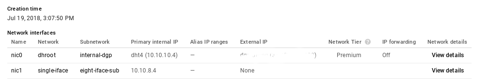
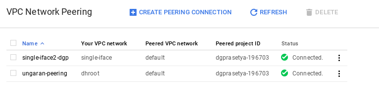
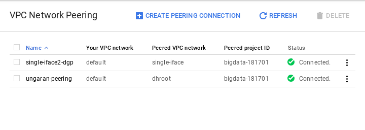

How to connect Multiple Nics with VPC Peering at Google Cloud Platform
Assumed we can connect successfuly with VPC Peering within this tutorial. Now we try add more nics. in this example, we added 1 nic. Nic at Google compute engine cant add or remove, we must recreate compute engine to have more or less nic.
Topology:
+-------+ +--------+
| nic0+ | |
| | <-----------> nic0 |
| nic1+ | |
+-------+ +--------+
server 1 server2
server 1
nic0 = 10.10.10.4/24
nic1 = 10.10.8.4/24
server 2
nic0 = 10.148.0.4/24
Configure:
server 1
- Create a new VPC Network with subnet
10.10.8.0/24. Dont overlap other subnet, in this example we use10.10.8.0/24. - Create VPC Network Peering with name
single-iface(in example). Follow this tutorial. - configure or add two nic
- with first nic0
10.10.10.4/32subnet/networkdhroot(in example), with external custom static ip address. - with second nic1
10.10.8.4/32subnet/networksingle-iface(in example), with none external ip address.
- with first nic0

- server 1 done.
server 2
- Create VPC Network Peering with name
single-iface2-dgp(in example). Follow this tutorial. - server 2 done
at the end configuration, it should be looks like these:
from instance 1

from instance 2

we can ping {from,to} server 1 {to,from} server 2 via nic0. But cant ping server 1 with ip address 10.10.8.0/24 from server 2 because main/default routed to 10.10.10.1 when leave interface. We can use tcpdump to troubleshoot this issue.
so we need route nic1 traffic from/to 10.10.8.0/24 via interface nic1 or eth1 to 10.10.8.1 with table routing to fix this issue.
assumed ip address nic1/eth1: 10.10.8.4, so configure server 1 with these commands:
ifconfig eth1 10.10.8.4 netmask 255.255.255.255 broadcast 10.10.8.4 mtu 1430
echo "1 rt1" | tee -a /etc/iproute2/rt_tables
ip route add 10.10.8.1 src 10.10.8.4 dev eth1
ip route add default via 10.10.8.1 dev eth1 table rt1
ip rule add from 10.10.8.4/32 table rt1
ip rule add to 10.10.8.4/32 table rt1
recheck again traffic route to 10.10.8.1:
root@dct:~# ip route show dev eth1 table rt1
default via 10.10.8.1
root@dct:~#
Testing
now, trying ping or other tcp connect from server 2:
[root@serv3 ~]# telnet 10.10.8.4 22
Trying 10.10.8.4...
Connected to 10.10.8.4.
Escape character is '^]'.
SSH-2.0-OpenSSH_7.4p1 Debian-10+deb9u2
done.